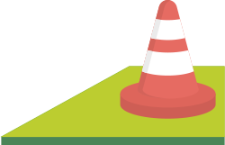
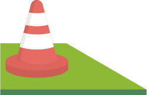

<!--
  Generated template for the ScreeningModalFcsCarryPage page.

  See http://ionicframework.com/docs/components/#navigation for more info on
  Ionic pages and navigation.
-->
<ion-header color="dark">
  <ion-toolbar color="dark">
    <ion-title>
      Carry Screen
    </ion-title>
    <ion-buttons start>
      <button ion-button (click)="dismiss()">
        <span ion-text showWhen="ios">Close</span>
        <ion-icon name="md-close" showWhen="android,windows"></ion-icon>
      </button>
    </ion-buttons>
  </ion-toolbar>
</ion-header>

<ion-content>

  <div style="float: left; width: 50%; border-right: solid 1px #eeeeee;">
    <ion-list style="margin-bottom: 0;">
      <ion-list-header color="light">
        <small>Weight Carried</small>
      </ion-list-header>

      <ion-item>
        <ion-item>
          <ion-input type="text" placeholder="Weight Carried"></ion-input>
        </ion-item>
        <ion-badge color="secondary" item-right>lbs</ion-badge>
      </ion-item>


    </ion-list>
  </div>

  <div style="float: left; width: 50%;">
    <ion-list style="margin-bottom: 0;">
      <ion-list-header color="light">
        <small>Percentage Carried</small>
      </ion-list-header>

      <ion-item>
        <ion-item>
          <ion-input type="text" placeholder="0"></ion-input>
        </ion-item>
        <ion-badge color="secondary" item-right>%</ion-badge>
      </ion-item>

    </ion-list>
  </div>

  <div style="clear: both;"></div>


  <ion-card>

    <ion-card-header text-center>
      <time style="font-size: 38px;">00:00:00</time>
    </ion-card-header>

    <ion-card-content text-center>
      <!-- Add card content here! -->
      <button ion-button small color="secondary" >Start</button> <button ion-button small color="primary" >Stop</button> <button ion-button small color="fmsBlue" >Reset</button>
    </ion-card-content>

  </ion-card>

  <ion-grid class="carry" style="max-width: 330px">
    <ion-row>
      <ion-col col-3 (tap)="tapEvent0($event)">
        
      </ion-col>

      <ion-col col-3>
        
      </ion-col>

      <ion-col col-3>
        
      </ion-col>

      <ion-col col-3 (tap)="tapEvent0($event)">
        
      </ion-col>
    </ion-row>

  </ion-grid>
  <ion-list>
    <ion-list-header color="light">
      Distance
    </ion-list-header>

    <ion-item>
      <ion-item>
        <ion-input type="text" placeholder="{{tapCarry}}"></ion-input>
      </ion-item>
      <ion-badge color="secondary" item-right>ft</ion-badge>
    </ion-item>

  </ion-list>

  <button ion-button full block (click)="dismiss()" color="secondary" >Save</button>

</ion-content>